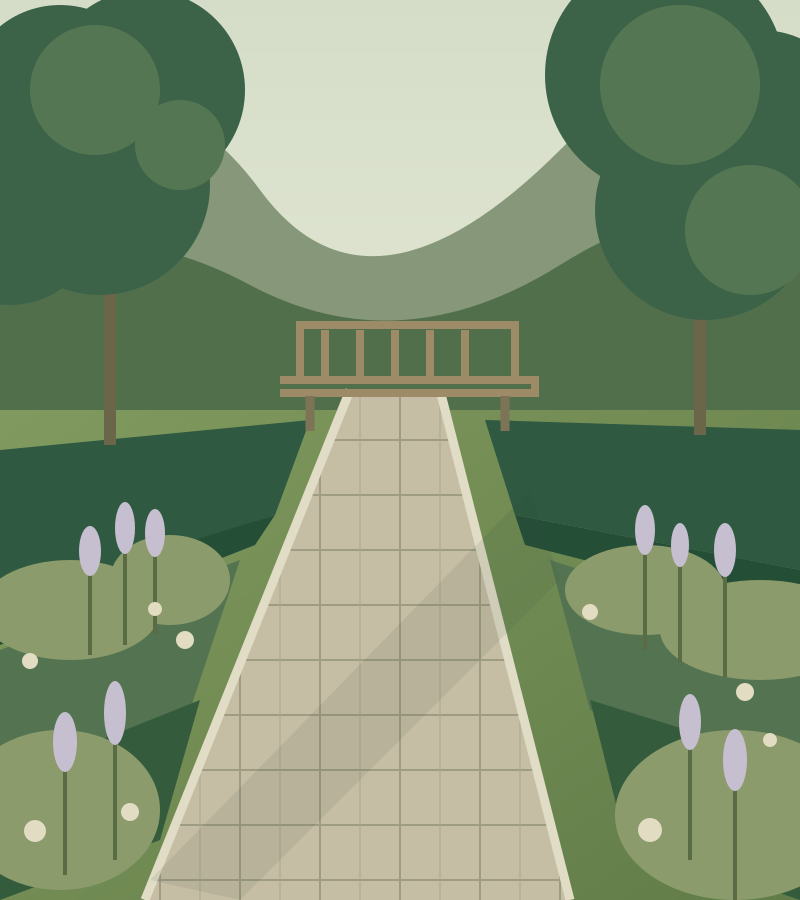

Garden Design
From a first sketch to a complete planting plan, a garden that belongs to its home and its landscape.
GARDEN DESIGN STUDIO / LONDON & SURREY
Outdoor spaces as intentional as the homes they surround. Thoughtful design, expressive planting, and room to simply be.

THE WHITMORE GARDEN / ILLUSTRATED STUDYWHAT WE DO
From a first sketch to a complete planting plan, a garden that belongs to its home and its landscape.
Terraces, water, lighting and structural planting, brought together with a clear architectural language.
Care that follows the seasons: pruning, replanting and healthy soil for a garden that keeps evolving.
FEATURED DESIGN STUDY
An imagined transformation across 1.2 acres. Mature trees frame a formal lawn, mixed perennial borders, a sunken seating area and a productive kitchen garden.
Concept study, not a completed project or award claim.
HOW WE WORK
Walk the space, listen to your goals, and understand the site.
Plans, palettes and materials, shaped around your approval.
Coordinate groundwork, construction and planting to the agreed design.
A seasonal approach that helps the garden settle in and flourish.
A GARDEN HAS ITS OWN RHYTHM
Illustrative UK planting notes, not a site-specific horticultural recommendation. Soil, drainage, climate, pets and toxicity need assessment.
AN EARLY CONVERSATION STARTER
Explore a rough planning allowance for a garden project. It’s a starting point for a conversation, never a quote.
LET’S MAKE SOMETHING LIVING
Tell us what you hope to feel when you step outside.
Browser-only concept. No consultation or site visit is booked.